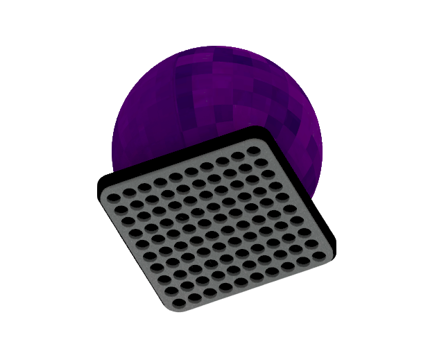
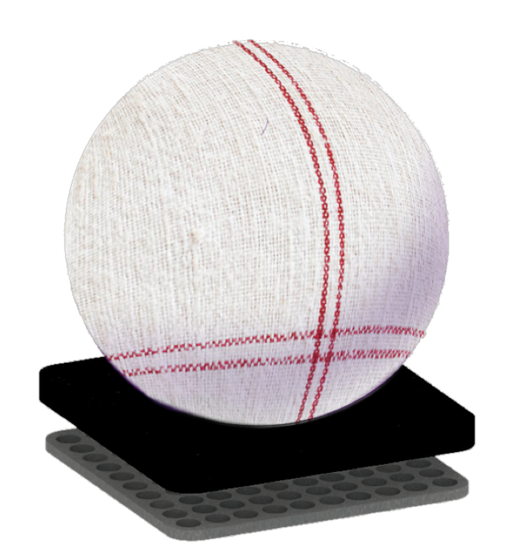
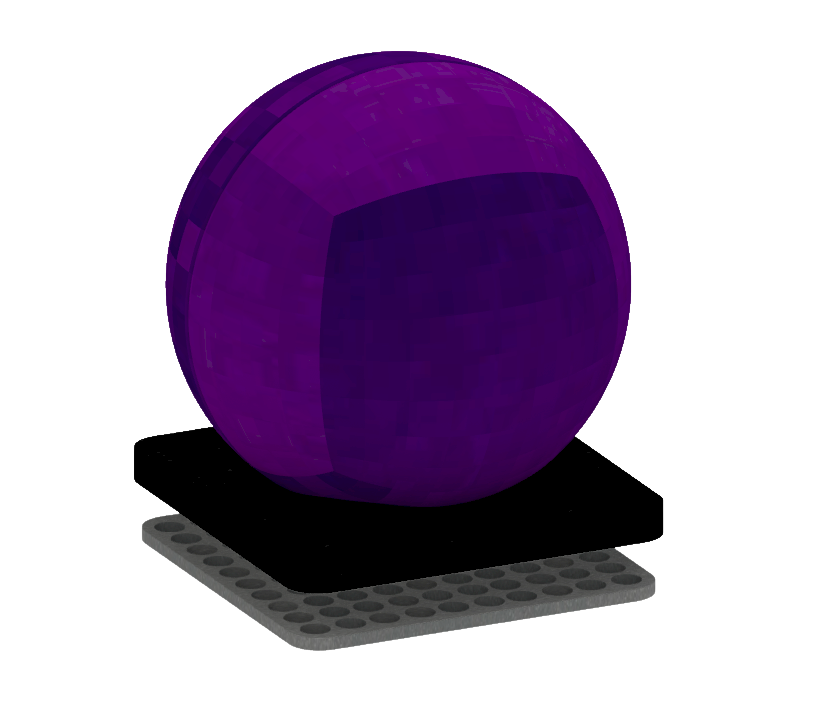
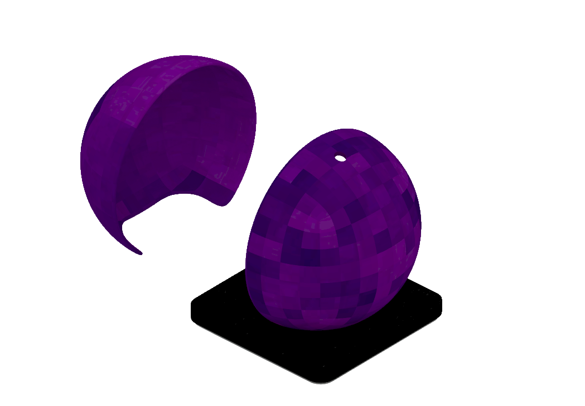

a development in process
Most Recent · Product Design
redesigning the portable vacuum cleaner

01 · Materials
ORB's outer shell lifts off the core, so it can be finished in more than plastic. Its covers come in materials that belong on furniture — the goal is camouflage: an appliance that disappears into the sofa, the car seat, the kitchen counter, instead of hiding under them.
Tap a material to see ORB camouflage into it.

Woven cotton — ORB sits camouflaged beside kitchen linens and runners.
02 · The Problem
Placing a portable vacuum in every room is impractical and clutters the home. Each piece of furniture collects dust differently — sofas trap lint, beds gather dust underneath, cabinets collect particles in tight corners — yet most portable vacuums aren't adaptable enough to clean all of these surfaces with a single device. And while the market keeps producing the same gun-shaped handhelds, they remain objects we hide away.
We decorate our homes — then why not our vacuum cleaners?
ORB answers both gaps at once: one versatile cleaner for the whole home, designed as an object worth leaving out.
03 · Form

The body is a single sphere in deep purple, with no visible sensors, bumpers, or buttons breaking the surface. The color and attitude draw from Yayoi Kusama's Violet Obsession (1994) — an everyday object transformed until it demands to be looked at.
Resting on its compact dock, ORB reads as décor first and appliance second.
04 · Ergonomics
Ergonomics research shaped the engineering brief: studies show discomfort while vacuuming rises sharply with weight and time — especially in the wrist — and that keeping a vacuum's center of mass near the hand significantly lowers muscle load. ORB's balanced, lightweight spherical form keeps its mass centered in the palm.
05 · Construction

ORB is built in two parts: a removable outer shell and an egg-shaped inner core that houses the motor, filter, and dust container.
Splitting the form keeps the exterior clean and continuous while making the inside easy to access, empty, and maintain — the working machine stays serviceable without compromising the sealed exterior.